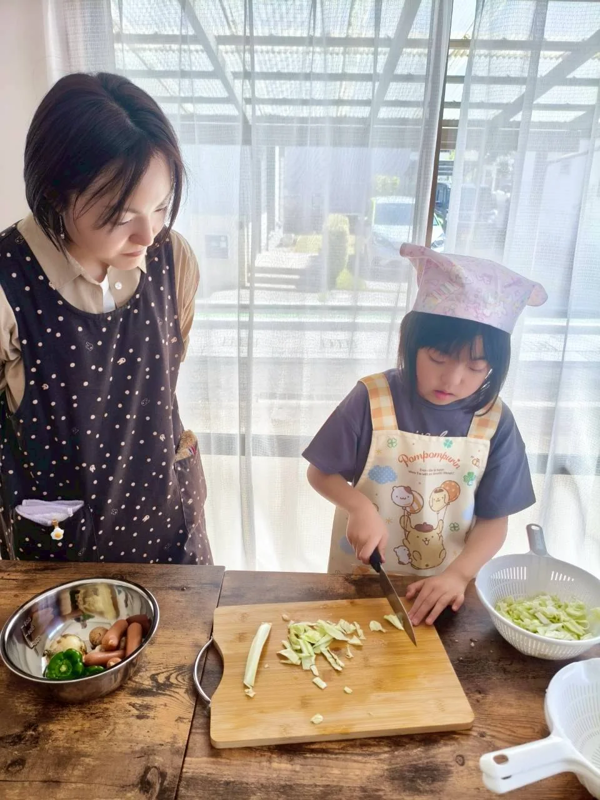
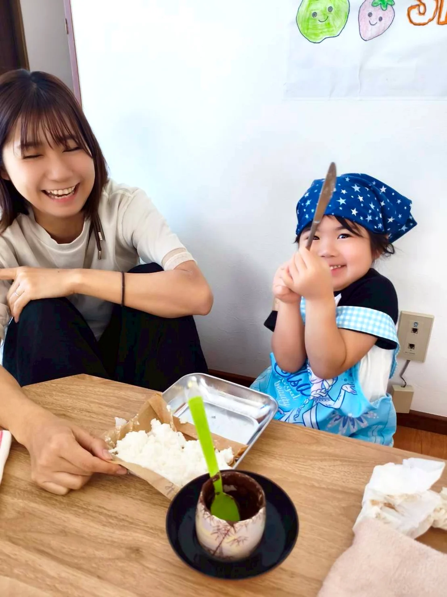
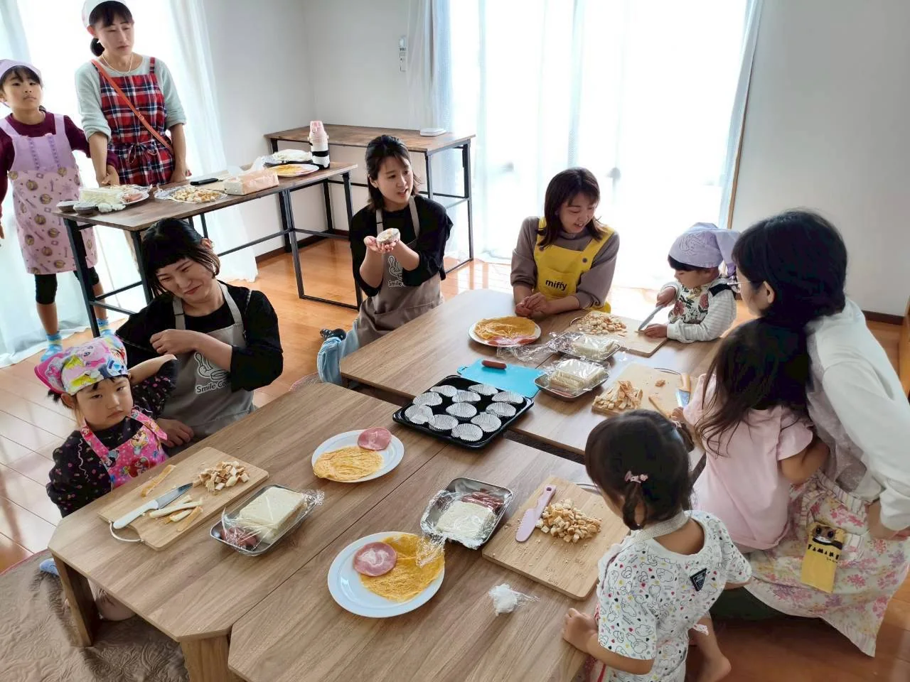
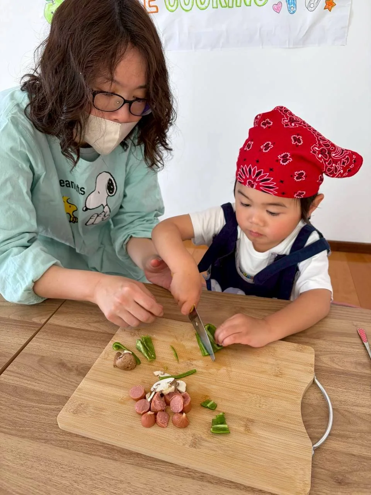
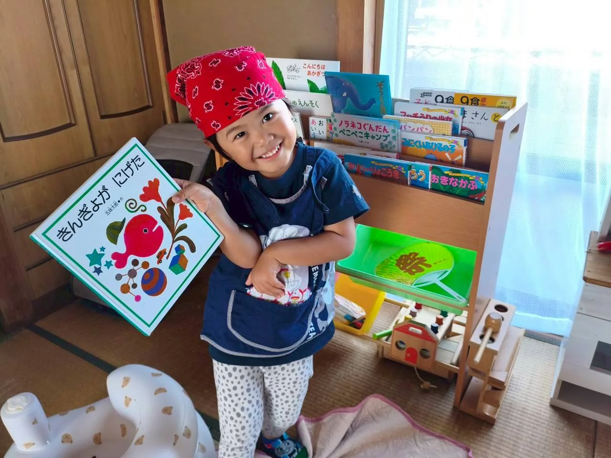
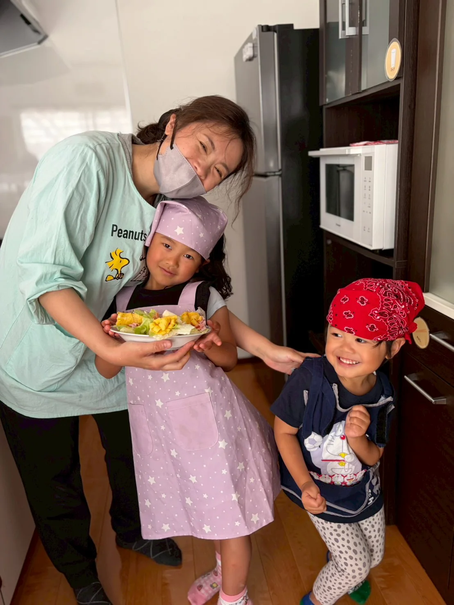

1
まずは、手を動かしてみる
講師がそばで見守りながら、その子に合う形で「やってみたい」を引き出します。最初の一歩が出ると、そこからぐっと入り込みやすくなります。
待てない日があっても、それで大丈夫です。
スマイルクッキングでは、安全は講師が支えながら、子どもが主役になれる時間をつくっています。ママも少し肩の力を抜いて、「できた！」の瞬間を隣で見ていてください。



禁止を増やすためのルールではなく、子どもたちが自分で考えて動くためのお約束です。レッスンの最初にみんなで確認しています。
小さい子どもは、ずっと座って同じことを続けるよりも、
やってみる → 少し離れる → また戻る、をくり返しながら集中が育っていきます。
スマイルクッキングでは、その流れごと受け止めながら「できた！」につなげています。



家では「危ないよ」「もうママがやるね」と言ってしまうことが多かったのですが、レッスンでは子どもが自分で考える時間を待ってもらえて、私も見守り方を学べました。
親子で一緒に作るのに、子どもが主役になれる時間でした。うまくいかなかった経験しそうな場面でも先生がそっと支えてくれるので、安心して任せられました。
家では余裕がなくてゆっくり料理をさせてあげられませんでしたが、ここでは「できた！」を近くで見られて嬉しかったです。帰ってからも自信満々に話していました。
まずは体験レッスンで、教室の雰囲気とお子さんの反応を見てみてください。
日程や兄弟参加で迷ったら、LINEでお気軽にどうぞ。